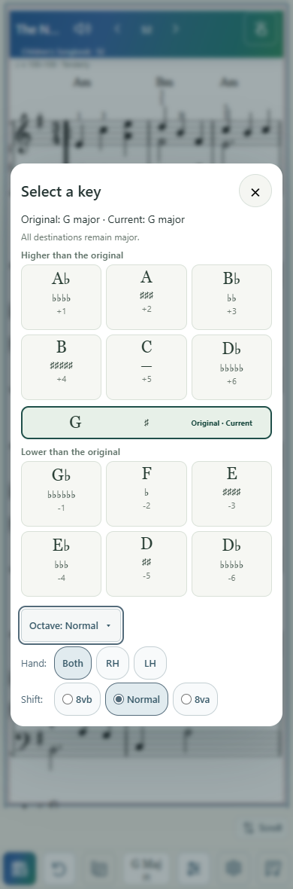
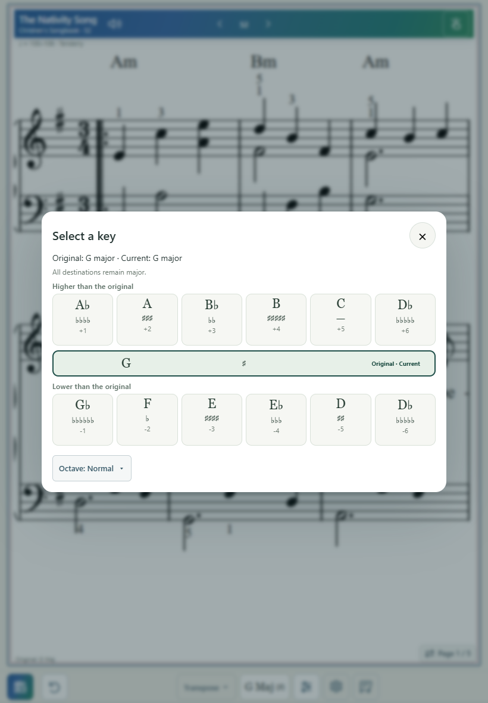
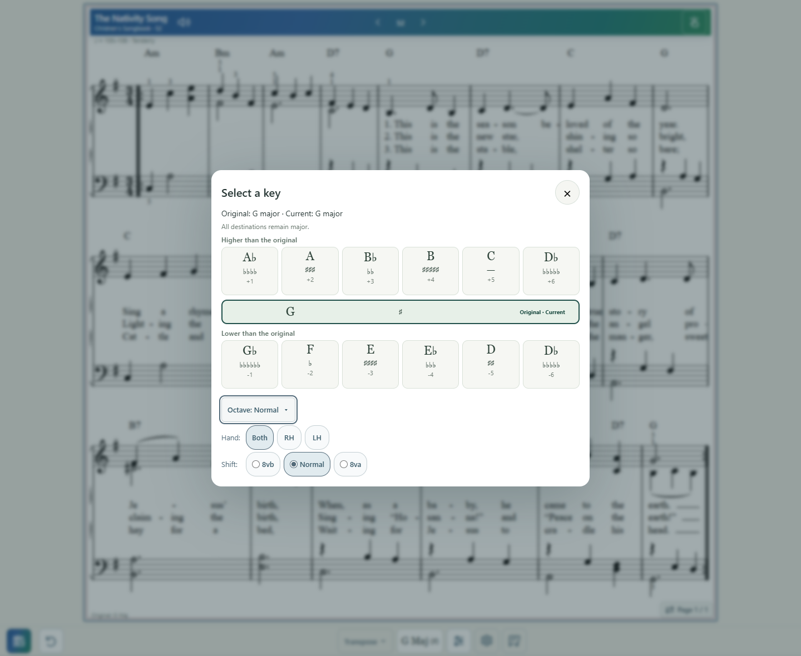

Key dialog: compact Octave controls
2026-10-04. Baseline: fe9bf28.
- Ordering: existing ensemble guidance and Higher / Original / Lower key groups, then Octave. Key choices, instrument guidance and recommendations unchanged.
- Default collapsed button: “Octave: Normal ▾”, neutral background, subtle border, compact 13px text, minimum 44px target. It exposes aria-expanded, aria-controls and a human-readable state label.
- Expanded panel: Hand [Both] [RH] [LH], then Shift [8vb] [Normal] [8va]. Content-sized 44px pills with aria-pressed buttons and native checked radios; visible keyboard focus. No large equal-width cards.
- Status rules: Normal; Both/RH/LH · 8vb/8va; Custom for differing nonzero hand shifts. Melody and whole-score fallback use 8vb/Normal/8va without hand labels. Custom accessible text describes both hands.
- Removed the separate RH/LH summary line and visible fallback warning. The shared octaveSummary function remains for Score status. Fallback explanation is available through title/aria-description.
- Two-staff semantics unchanged: Both shifts both hands; individual shifts preserve the other hand. Mixed state, individual Normal, Both up/down and one-hand up/down passed.
- Unsafe separate-hand scores retain the existing whole-score transformation, with Hand hidden. Verified the shepherd fixture and exact resulting XML.
- Melody-only shifts retain the existing independent lead register; Hand is hidden. Down/Normal/up output exactly matched the existing shiftOctaveXML applied to the unshifted Melody XML.
- Reset restores Normal. Closing/reopening collapses the disclosure while preserving the selected octave state. Changing Hand/Shift keeps the dialog and disclosure open.
- 390/430/820/1024/1440px checks passed: no dialog horizontal overflow, compact control width, all selector targets at least 44px, Octave below the final key group. Screenshots inspected at 390/820/1440.
- Full-score XML for each exercised shift exactly matched shiftStaffOctaves(transposeXML(original), state, hands). octave.js, pianoHands(), music.js, octave limits, extraction, print/export, playback and metronome implementations are untouched.
- Tests: node tests/octave-dialog-polish.mjs; node --check app.js; git diff --check. No broad unrelated suites.
- Changed: app.js, index.html, styles.css, sw.js (v225), focused test, report/evidence. Existing diagnostic files remain untouched. Commit/deployment appear in the completion message.
- Physical iPhone/iPad confirmation of touch comfort and dialog scrolling remains pending; browser checks do not replace physical-device judgment.
State and geometry results
Phone expanded

iPad collapsed

Desktop expanded
